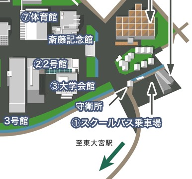
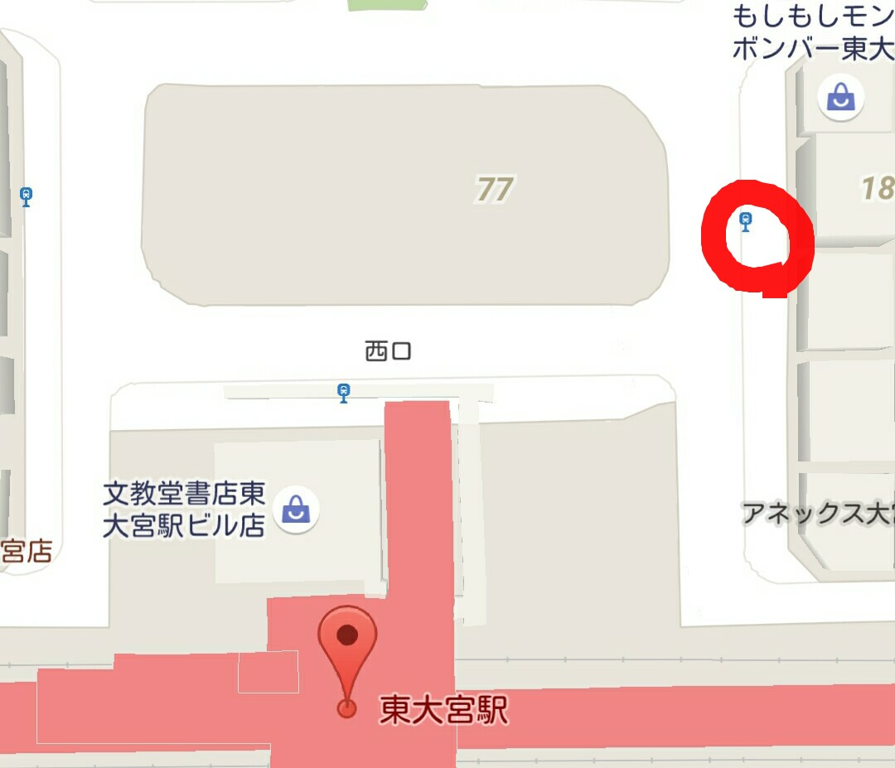

演奏依頼・質問・ウェブについては csjo.informationアットマークgmail.com までご連絡ください(アットマークを@に変えてください。)
CSJOのTwitter
CSJOのFacebook
 バス停からサークル棟の方に続く階段を登った正面にある2つの部室の左の部室がCSJOのものとなります。
 東大宮駅前より、無料のスクールバスが発車しております。そちらも併せてご利用ください。